EBF Session 2
Harry Otter and the Regression Bootcamp
Ablauf
- Grundidee der linearen Regression
- Interpretation und KQ Schätzung
- Multivariate Analysen
- Güte der Vorhersage: R²
- Regression App
Online Linear Regression App
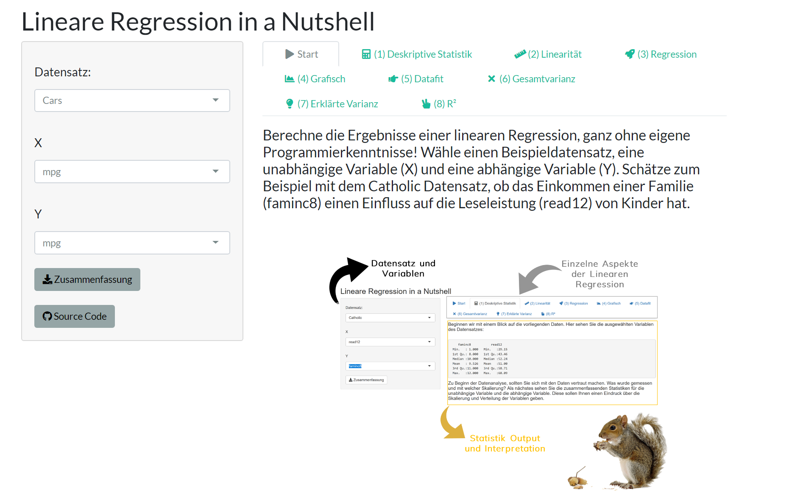
Die Online App dient also der Vertiefung der linearen Regression. Ist die App auf der nächsten Seite nicht sichtbar, kannst du Sie auch in einem neuen Fenster laden und an den enstprechenden Stellen im Online Modul darauf zurückgreifen.
Click to open in a new tab.
Die Grundidee der Regression
A dark cloud is rising!
😇Was untersucht die EBF?
- Einfluss von X auf die Noten (Kompetenzen) von Schülerinnen/Schüler (SuS)
- Einfluss von X auf den Übergang (Ja/Nein) / Erreichen eines Schulabschlusses (Ja/Nein) von SuS
- Einfluss der Ausgestaltung des Bildungssystems (Klassengröße, G8/G9) auf Y
- (Kausale) Effekt von X auf Y
Große Eltern, große Kinder?
Francis Galton
Galton board

Source: R chipmunkcore package
Die Daten
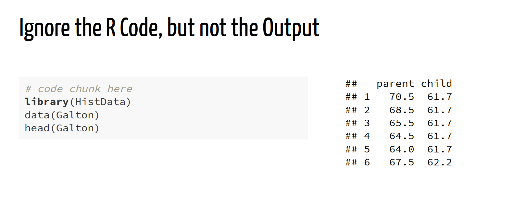
Regressieren heißt zurückführen: Eine abhängige metrische Variable (AV wie bspw. Körpergröße, die Schulleistung, etc.) wird auf eine oder mehrere unabhängige Variable (UV wie die Körpergröße der Eltern) zurückgeführt (sprich: regressiert).
Der Zusammenhang zwischen der UV und der AV wird durch eine Funktionsgerade beschrieben. Wir tragen alle Werte der UV und der AV in einem Diagramm ab und legen eine Gerade in die Datenwolke, welche den Zusammenhang zwischen UV and AV möglichst präzise beschreibt.
Die Datenwolke
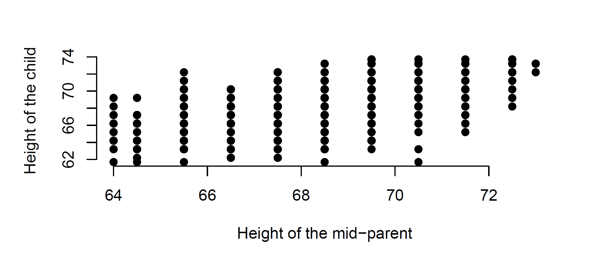
Welche Funktionsgerade?
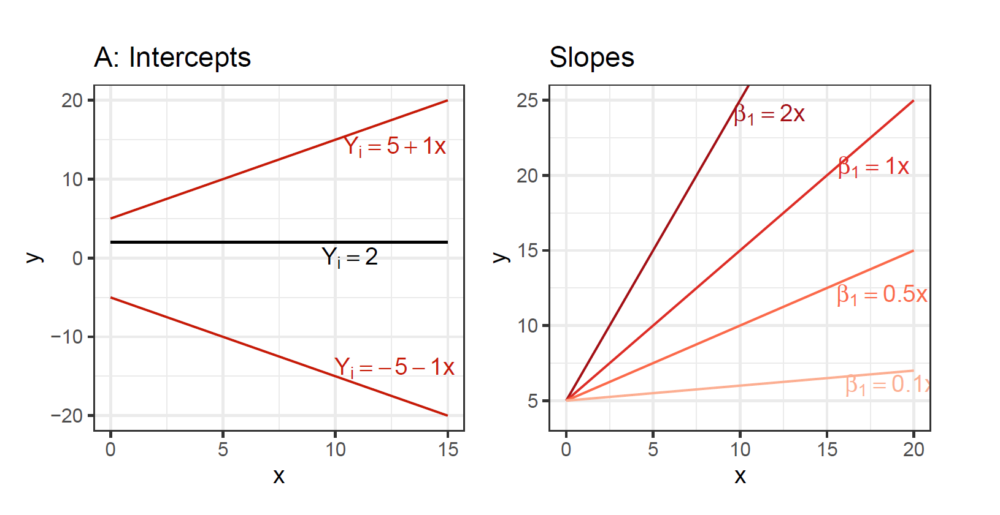
Welche Funktionsgerade darf's denn sei?
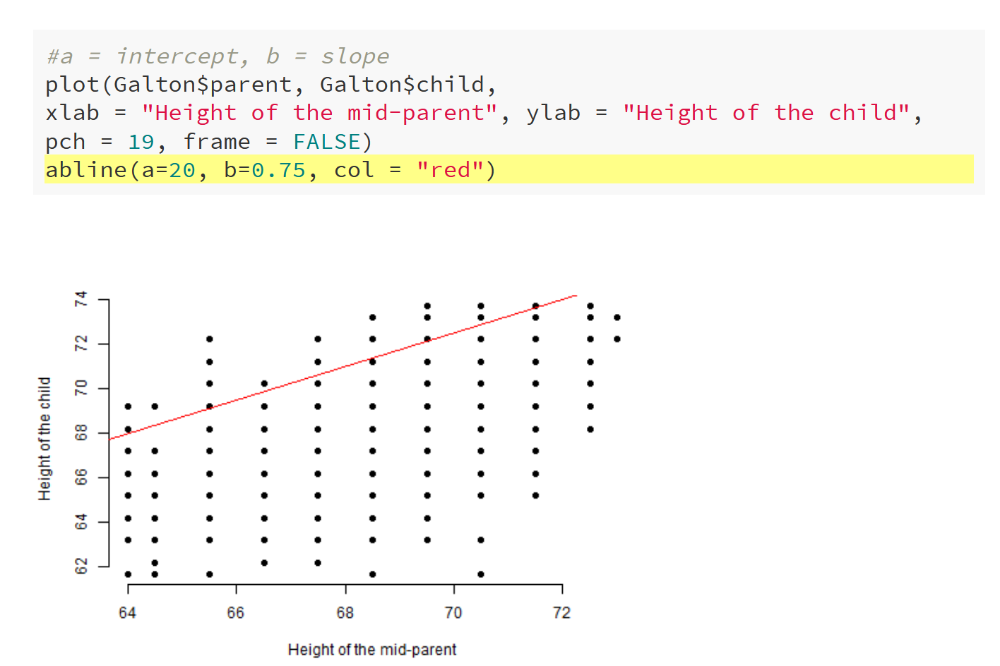
Eine Funktionsgerade mit kleinem Fehler!
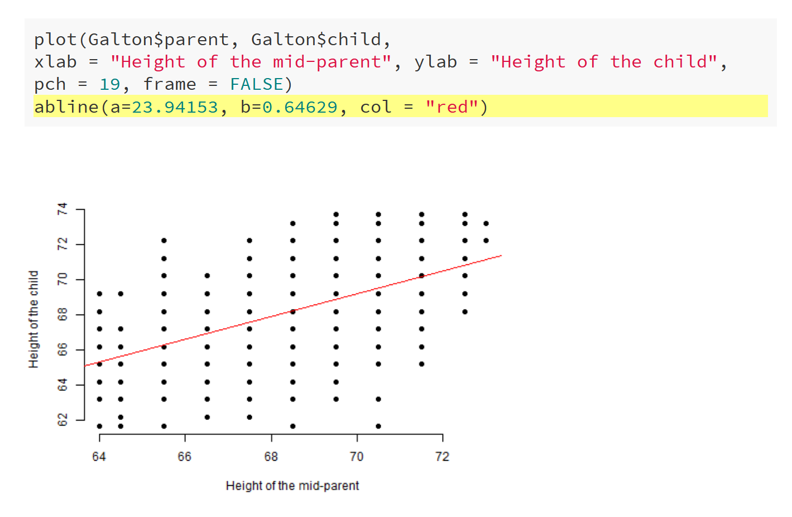
Wir halten fest:
- Y Achsenabschnitt: Wo beginnt die Gerade?
- Steigungskoeffizient: Wie steil oder flach verläuft die Gerade?
- Fehlerterm (Residuum): Vorhersage ist nicht perfekt, wir machen also einen Fehler.
Zusammenfassung grafisch
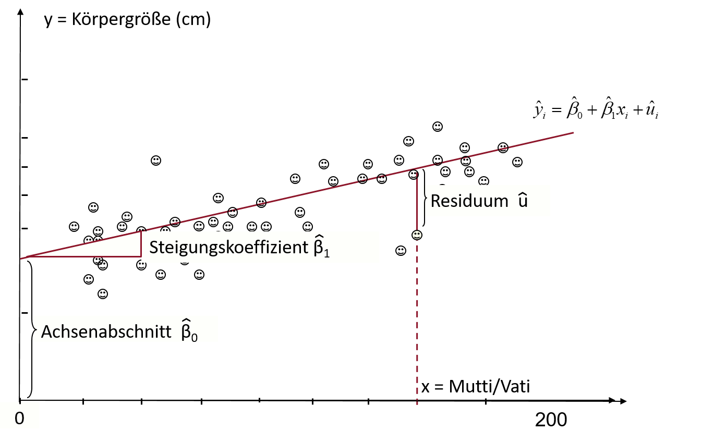
Now you'll have to grit your teeth! 🙈
Interpretation und KQ Schätzung
kochrezept Interpretation
- β°: Durchschnittlicher Wert der abhängigen Variable y, wenn alle anderen Einflussgrößen gleich 0 sind. (y-Achsensabschnitt oder Intercept)
- β¹: Verändert sich die unabhängige Variable X um eine Einheit, so verändert sich die abhängige Variable um β1 Einheiten. (Steigung)
- u: Fehlerterm (Residuum)
Beispiel Regressionsoutput
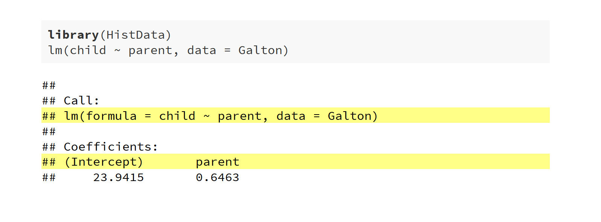
Interpretation grafisch
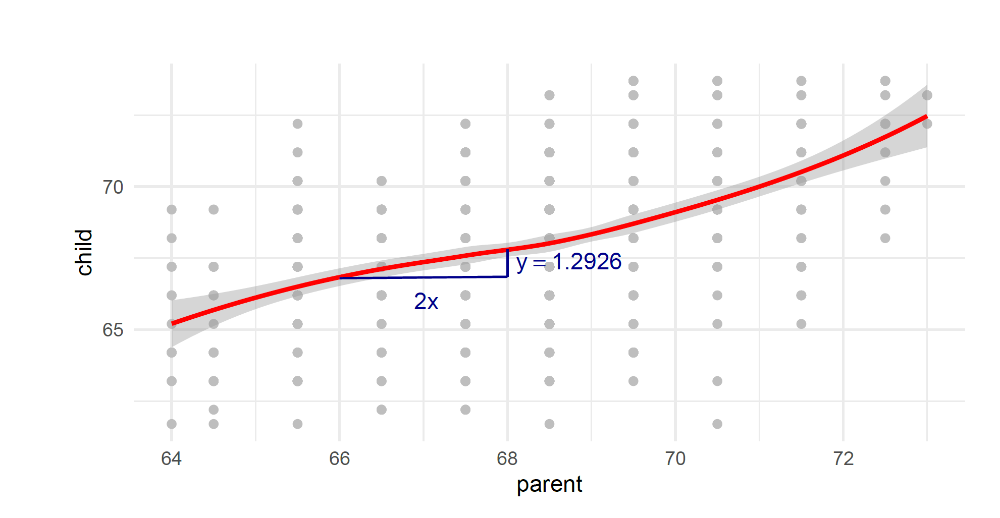
Sind die Effekte signifikant?
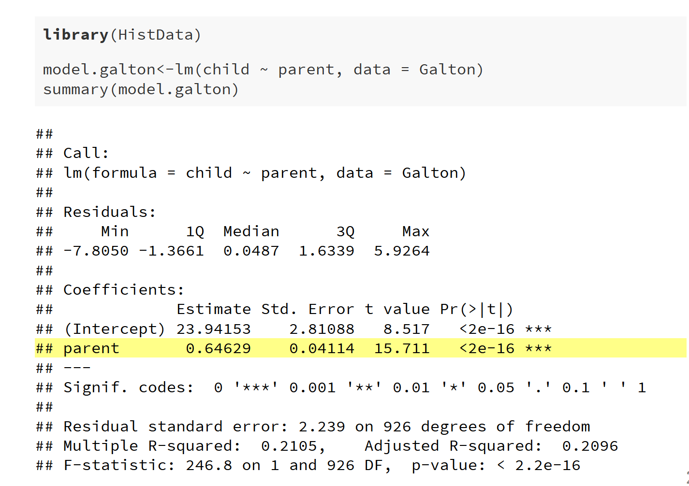
Now, it's your turn 🐍 !
(Reiter 3 Regression)
Open the App.
Grrr, next time you won't get off so easy 😉
Bei der Regression soll die Gerade den Funktionszusammenhang so gut wie möglich beschreiben. Hierfür nutzen wir den KQ Schätzer.
KQ Schätzer
- Residuen werden dabei quadriert, weil …
- ... sich sonst positive und negative Abweichungen ausgleichen.
- ... stärkere Abweichungen stärker in die Berechnung einfließen sollen.
Math Wizardy: The Slope spell
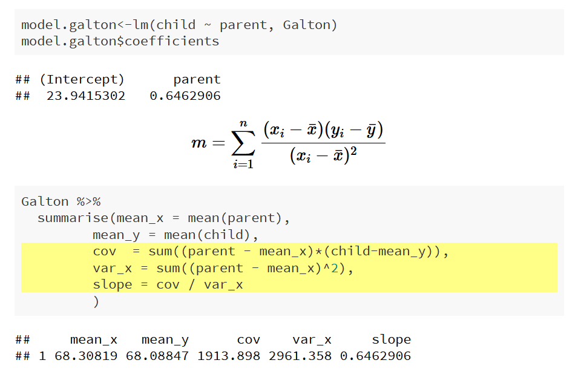
Math Wizardy: The Intercept spell
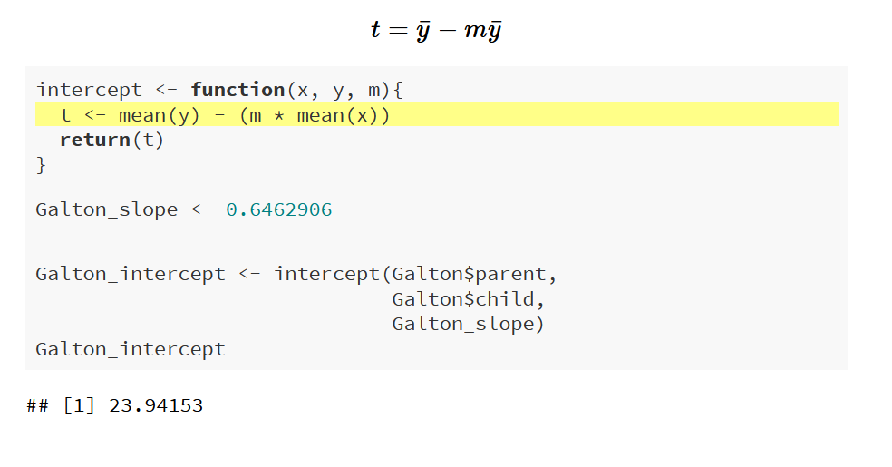
That's the magic behind it 😆
Multivariate Analysen
Multivariate Analysen
- Bivariate vs. multivariate Analysen
- Funktionsgleichung wird mit weiteren Koeffizienten (Variablen) erweitert
- Ceteris paribus (d.h. unter sonst gleichen Bedingungen): Der Einfluss von X auf Y kann unter Konstanthaltung weiterer Variablen berechnet werden
Spurious confounder
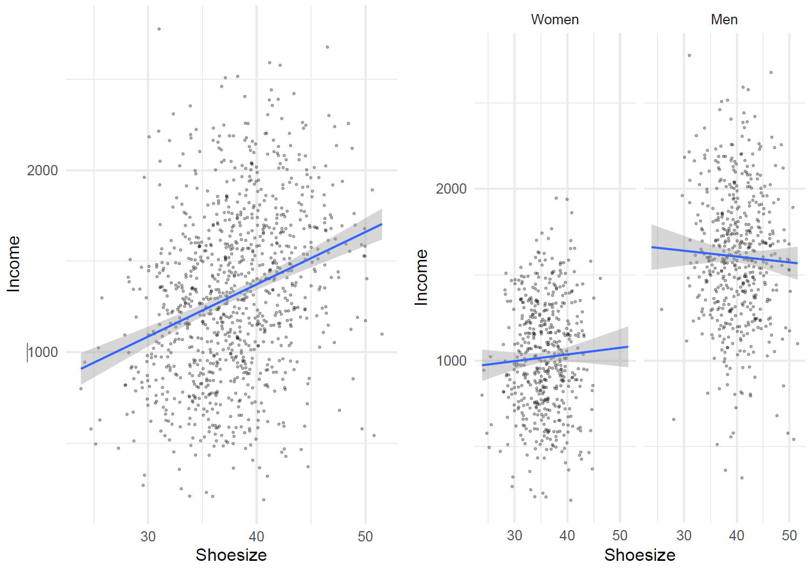
Identifikation eines kausalen Effekts....
- mit Hilfe der Regression: Berechnung eines Effekts durch Kontrolle beobachteter Variablen, d.h. Kontrolle aller Variablen die sowohl den Treatmentstatus (X) beeinflussen und einen Einfluss auf die abhängige Variable haben
- Hoffnung: Nach Kontrolle der Variablen ist die Zuweisung des Treatmentstatus X „so gut wie zufällig“ (CIA)
Merke:
Time for the last battle!
😉
Wie gut ist unsere Vorhersage?
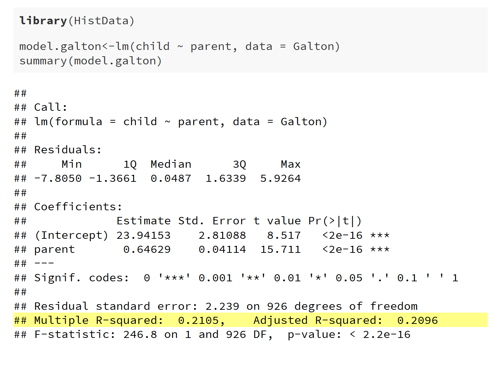
Oh sweetie, are you telling me that you never heard of R² before? 😉
R²
Die Güte der Vorhersage der Regression. Ein kurzer Auszug zum Nachlesen.
“In vielen Fällen ist die Vorhersage der Regression nicht perfekt, d.h. es werden Fehler gemacht. Es handelt dabei sich um die Differenz zwischen dem vorhergesagten Wert (der Gerade) und den beobachteten Werten.”
“ R-Quadrat ist ein Indikator, der uns hilft zu beurteilen, wie groß der Fehler ist oder wie gut das Modell die Zielvariable (Outcome) erklärt.”
“Um R-Quadrat zu verstehen, müssen wir zuerst die Gesamtvarianz (Streuung) von X und Y uns vorstellen. Nehmen wir an, dass X gar keinen Einfluss auf Y hat, dann wäre der Beta-Koeffizient und damit die Steigung der Geraden gleich 0. ”
“D.h. es ist egal welcher X-Wert vorliegt, wir würden immer den gleichen Y-Wert beobachten. Die Gerade wäre flach. Das einzige zur Verfügung stehende Mittel um Y vorherzusagen, wäre beispielsweise das arithmetische Mittel von X und dies ist der durchschnittliche Fehler. ”
“Aber wir haben im Online Tool ja bereits eine Regressionslinie angepasst. Auf Grundlage der beobachteten Werte von X können wir Y also bis zu einem gewissen Grad erklären. ”
“Wir kennen demnach die Gesamtvarianz und die erklärte Varianz. Mit diesen zwei Werten können wir R² berechnen und somit den Fehler des Modells bewerten. R² ist der Anteil (%) der Varianz von Y, der durch die Regression vorhersagbar ist. Also die erklärte Varianz geteilt durch die Gesamtvarianz. ”
“Grafisch und an einem Beispiel lässt sich dies leichter nachvollziehen.”
ERROR
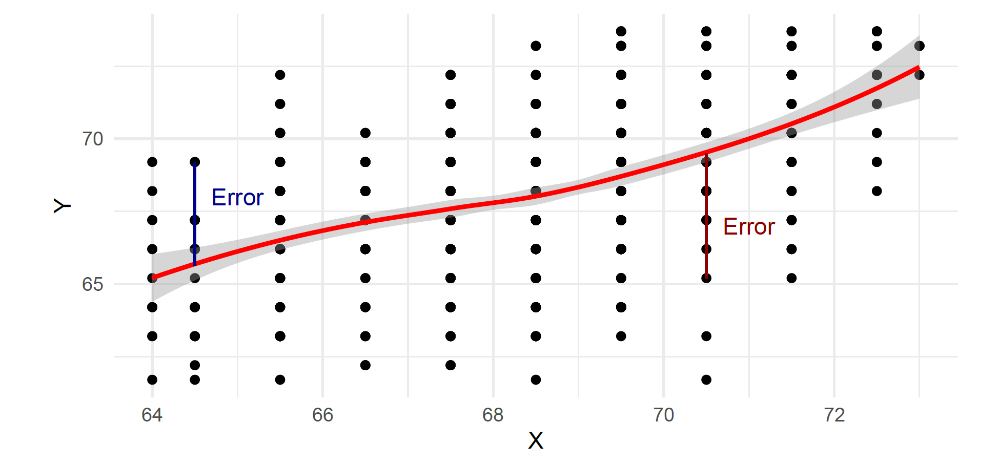
Gesamtvarianz vs. Erklärte Varianz
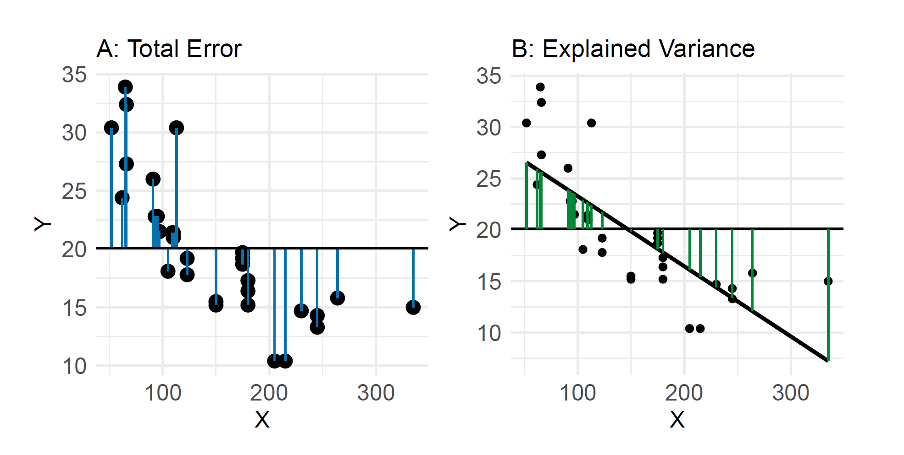
Prepare yourself, you're getting close!
(Reiter 5 - 7)
Open the App.
Blimey, not that bad for a muggle!
😂
Interpretation von R²
- R² = 0: Die Regression (X) trägt nichts zur Erklärung von Y bei.
- R² = 1: Die Regressionsfunktion erklärt Y perfekt (alle Punkte liegen genau auf der Geraden).
- R² = 0,2: 20% der Varianz wird durch die unabhängige(n) Variable(n) erklärt.
Zusammenfassung
- Grundidee und Logik (multivariater) Modelle
- Linear regression as the working horse of the social sciences
- Interpretation der Koeffizienten und Modellgüte